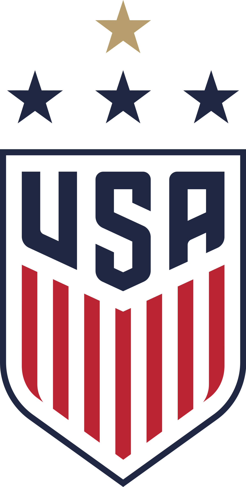
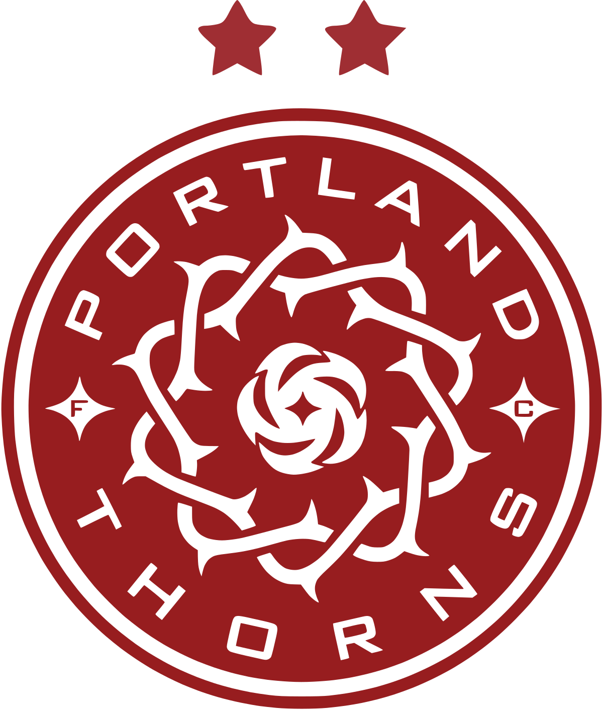
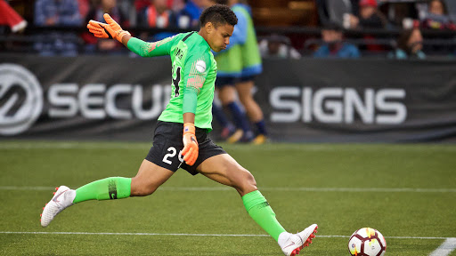
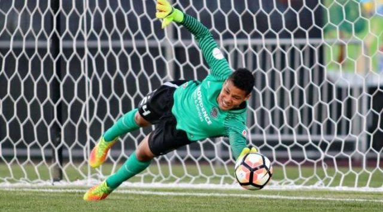
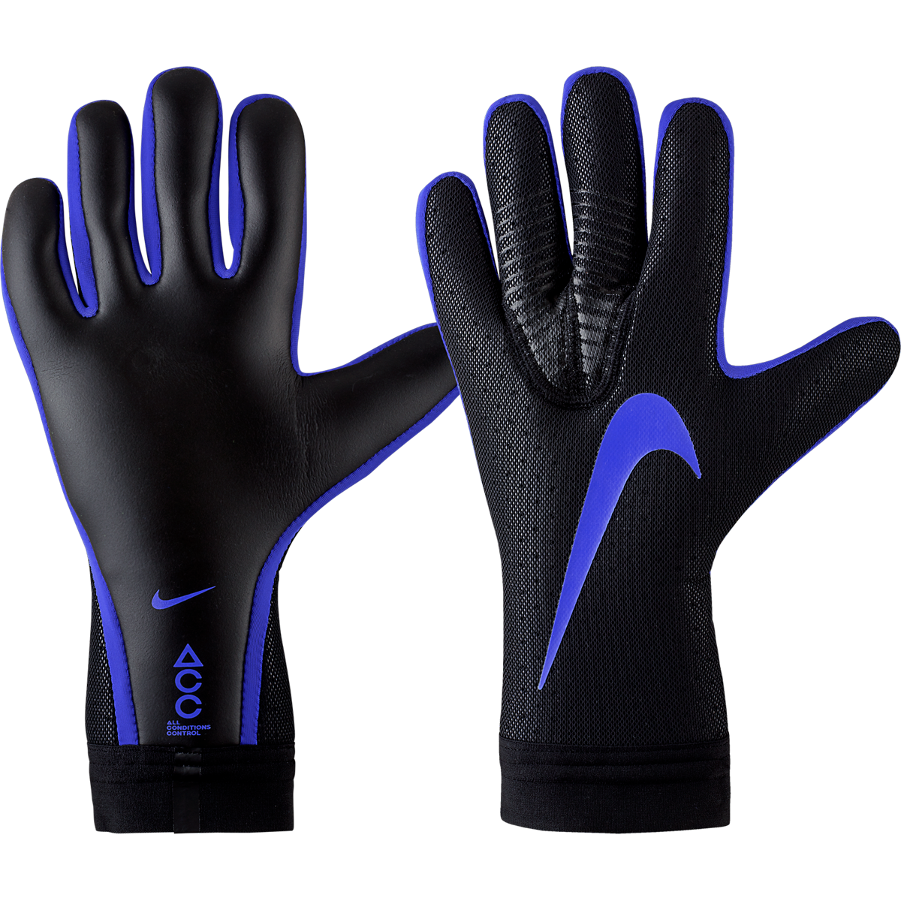

ABOUT ADRIANA FRANCH
STEP 4

She has played for the US since 2010 starting at the U-20 and played 7 games. In 2011-2013 she was with the U-23 and played 5 games before going to the national team in 2018 and played 3 games so far. Currently her number is 21 and was apart of the World Cup in 2019.
STEP 3

She started to play with the Portland Thorns since 2016 and has played a total of 44 games. She was awarded goalkeeper of the year 2 years straight which is the first time ever a player wins it twice in a row. In 2018 she was apart of the best XI and she is currently number 24.
STEP 2

She went to college at Oklahoma State University as a freshman and playing in 24 game with only 14 goals allowed. She was named First-Team All-Big 12 along with winning the Big 12 tournament for the second time in the colleges history. She also holds a record in the college for the most shutouts which is 38.
STEP 1

She grew up in Salina, Kansas and was a starter for 3 highschool seasons and became an All-State Player. She played with the Kansas Olympic Development Program and was apart of the National group in 2006. Her club team won state in 2016 and made it to the finals in 2007 and 2008.
She Wears NIKE Goalkeeper Gloves
